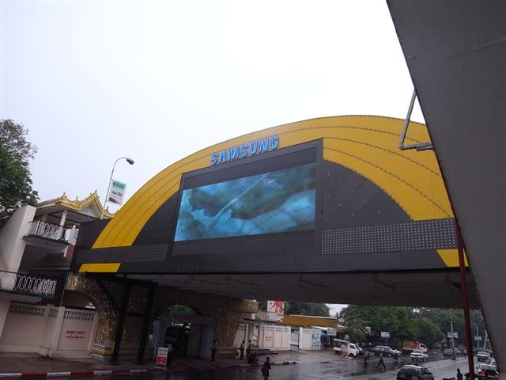
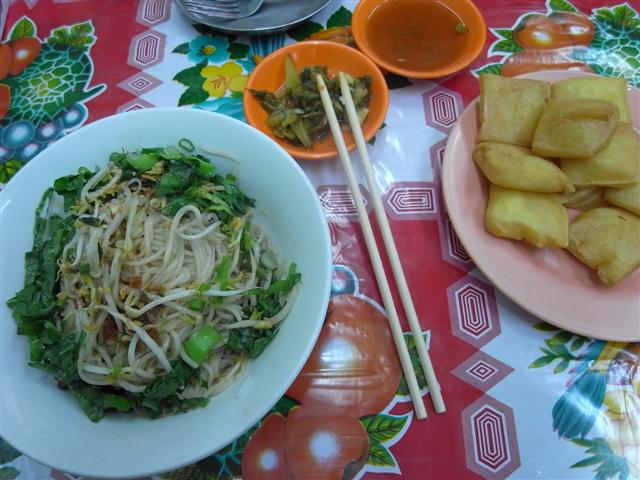
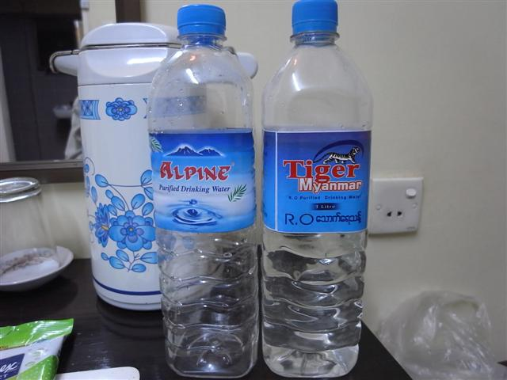
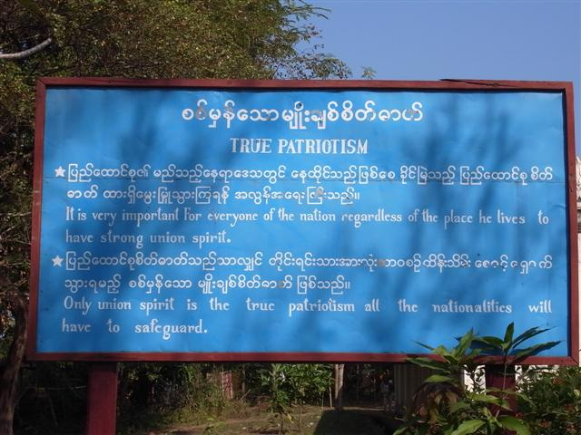

最後一天在緬甸，第一次又是最後一次吃 Motherland 的傳統早餐，這裏的傳統早餐有幾款，其中一款是先前在那本 Speaking About Myanmar 中看到介紹的 coconut noodle，今早就吃了它，很喜歡。
除了第一天的上午，其實我沒有逛過 Yangon，數年前緬甸的首都不再是 Yangon 而轉了去 Nay Pyi Taw，但 Yangon 仍然是大城市，是多數人到緬甸的落腳點。國際機場裝修過變成新簇簇、也有一些大型商場、通往各大城市的長途巴士站和火車站，更別說差不多遊客必去的 Shwedagon Paya。
1852 年被英國殖民統治，Yangon 又有很多西式大建築物如 High Court 和 Custom House，其他被統治過的城市如印度的 Mumbai 都有這些大型建築，香港雖然也被殖民統治過但可能因地方太小，始終欠缺這類佔地多的樓房。
我帶來的便攜雨傘多天沒有用，早已收藏了在大背包，但今天下雨就竟然沒有帶出街。最後一天逛才來下雨，街上全都是水，雨勢時大時小，我相信下雨最糟糕的，就是要赤腳參觀 Paya。早上參觀 Botataung Paya，門外已看見很多鞋子，但是地上都是污水，脫掉鞋子入去踏著污穢的地，感覺不是很好，還要有些地方超滑，差點滑倒。
所以，人字拖是必需品，雖然踏完污水又再穿上拖鞋已經很難受，但總好過穿波鞋。
在印度區吃印度餐，在一間很地道的小店吃 samosas，以及我的最愛 Masala Tea。然後在附近逛舊書店。突然愛上外地的舊書店舖，覺得有很多不同地方出版的書籍，平時不會看見。在一間書店瀏覽時，有一位西方女仕竟然在尋找「香港鞋店」。
走到出名的 Bogyoke Aung San Market，但當我入到去，發覺是我不喜歡逛的那種市場，十分多的店舖，但全都是主打外地遊客生意。金器、珠寶、紀念品，裏面見到的，是一群一群的遊客，有不少更是中國團，有間店標名「緬甸 A 玉」，究竟是 A 玉還是 A 貨就不得而知。逛這類「市場」，我很快就離開。
市場隔籬是一間很西式的餐廳 Zawgyi's House。看看餐牌，有些雪糕好像有特色，就走了入去。室外和室內都有座位，室內有一群中國遊客，室外則坐了很多西方人，我選了室外一個僻靜的座位。
餐廳室外有圍欄，和外面的行人路隔開。我坐了很久，侍應生忙於招呼其他穿得很遊客的人，無意去理會我這個疑似本地人的人，直至其他人真的沒有什麼要求，才發現我。我想點的特色雪糕沒有貨，結果只點了兩個普通味道的雪糕球。
外面的行人路上，站著一些人，有討錢的人，有賣東西的人，他們隔著圍欄叫喚著那些西方人，客人沒有理會他們，餐廳的人不時出外趕他們走。就這樣，我吃著很貴的雪糕（和香港某 H 字頭雪糕差不多價錢），看著討錢的人，想盡方法去找生意，不斷地被人趕走，不一會，又回來，然後，又被趕走。
吃東西都是吃環境的多，此時此地對我來說真是糟透的環境，Bert 曾說過如果我去 Ngapali Beach「會感到很不舒服」，我現在可以想像得到是如何不自在，吃完雪糕我匆匆付錢離開。
很可憐地，一心在下午才去乘坐火車的市區循環線，但竟然送尾班車，書上的班次早已不對版，售票員叫我明早再來吧，那即是不用來。反正外面下著雨，我坐在月台休息，月台上的小販拿著一個膠桶，走到鐵路上然後把裏面的食物渣滓倒到鐵路的石上，不一會，一群雀鳥飛到，一鳥一口，很快就把食物清理掉。
很髒嗎？開始時我也覺得。但是，我突然覺得其實很清潔，不要的、餘下的不一會就給了有需要的，不用什麼手續和程序，大自然就是這樣。我們的城市，卻不過是把垃圾放到一個眼不見的地方，然後覺得很乾淨。
在街上突然遇到一個人，他說想要錢，說自己是被迫害的逃犯，要錢坐火車到 Mandalay，說話瘋瘋癲癲，我還是給了些錢。
黃昏，原本一心要吃餐好，去推薦的 Monsoon 餐廳吃，但走著走著又想再吃 Shan State 的菜，所以走了去一間叫 999 的小店。叫這做小店是因為只得四張檯，店面積又小。但是這店有點香港以前一些豆品店的感覺。菜單竟然是圖文並茂的。
晚上回到旅館把剩下的 Kyat 轉回美元，這裏由 Kyat 轉回美元是要 1000 Kyat 換 1 美元的，所以之前不要換得太多，若果用剩太多反而向旅館的其他遊客換還好。回房寫下被 Golden Lily 騙的經歷，貼在旅館的壁報板。
我的房間就在地下，聽到外面很吵，原來同時來了很多剛到步的遊客，旅館的人突然忙得不可開交，房也很快滿了，後來的人沒有房。我想，人們都通常選星期六到步吧，我當天來的時候有房也很幸運呢。
突然，外面接待處傳來一些聲音，是我已數星期沒聽的港式英語！我打開房門出去看看，看見幾位說自己來自香港的年輕人剛登記完，拿著行李上樓梯去。我看著他們一身服飾，再看看自己，才發覺，我真的多麼不像一個香港人......
～回港～
住 Motherland Inn 2 的好處是無論到步或離開，都有免費車接送往來機場，不過好像只限某些航空公司的班次。雖然很早要離開但仍然安排早餐給客人。
緬甸人給我的印象是快樂，就算你不主動向他們說 Mingalaba，都充滿笑容，不論男女，都可以快樂地生活。人們咀嚼著 Betel Nut，塗上 thanakha，僧人在街上走，各自做著自己的事，在當中感到一分自在的感覺。
Bagan 的藝街家家中的一幅畫上有一個佛像舉著一個手勢，我問他這是什麼意思，他說 Buddha said: Don't worry。他們的樂天知命，說不定和他們的宗教有點關係。
初到步我腦中還是記掛著香港的事，被一些事煩擾著，臨離開緬甸時發覺沒有了，回到香港，雖然不會因為到此一遊就能解決問題，但有時候，都會想起這幅畫 Don't worry 的畫。
coconut noodle
Botataung Paya
Naga
Bogyoke Aung San Market

999 Shan Noodle Shop



施捨

THE TATMADAW SHALL NEVER BETRAY THE NATIONAL CAUSE



Saung (harp)